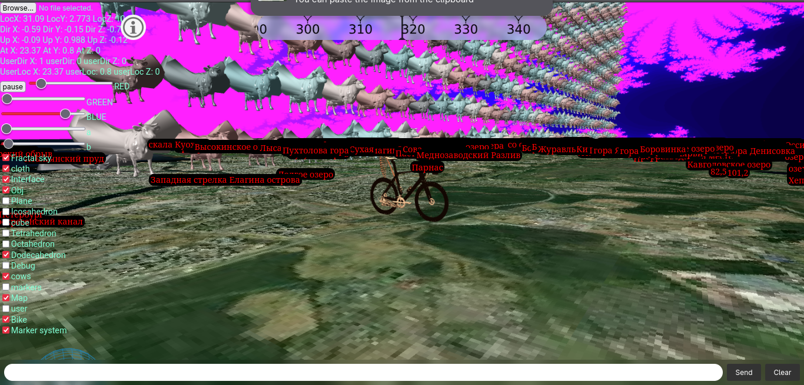
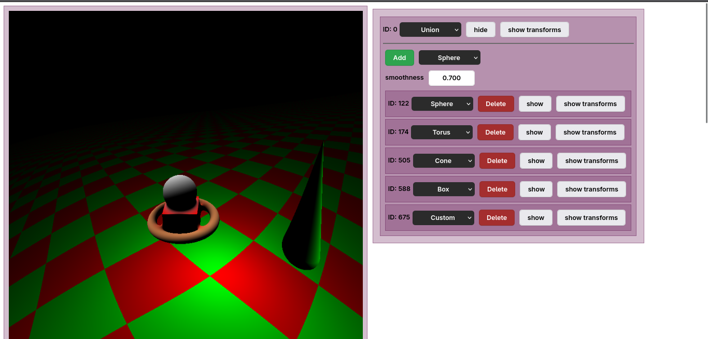
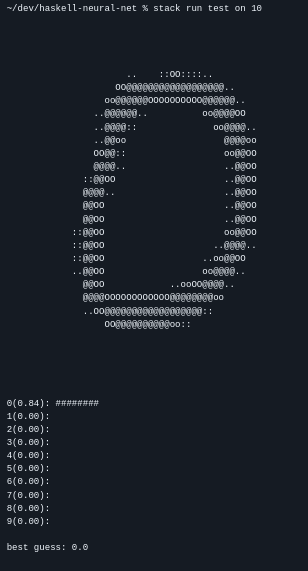
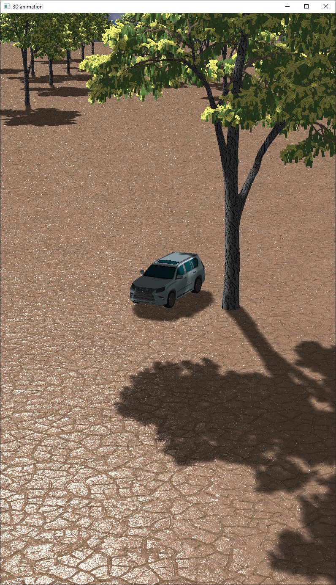
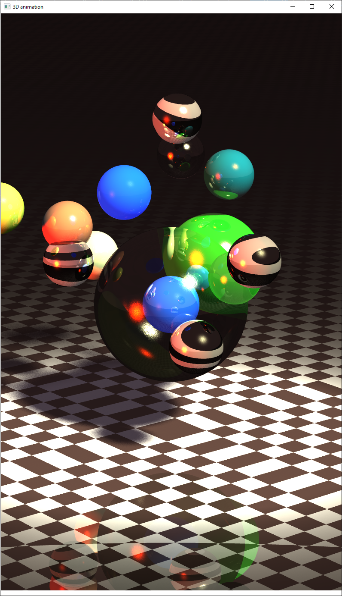

Про меня
2025-10-02Привет. Меня зовут Лука.
Я увлекаюсь программированием, чтением блогов, медитацией и горными лыжами.
Имею опыт программирования на следующих языках:
- C/C++ (Vulkan, OpenGL, WinAPI, SDL2)
- Haskell (Hakyll, base)
- Python (pytorch, numpy, pandas, matplotlib, seaborn)
- JavaScript (React, Node.js, Express.js, three.js, Rollup(Webpack))
Использую Linux(Arch), могу его администрировать на базовом уровне. В коде стараюсь держаться принципов grug.
Среди моих достижений можно отметить:
- 1 место на Колмогоровских Чтениях (2023) - я был членом команды по написанию движка 3D-графики на Vulkan
- Призер регионального этапа ВСОШ по программированию (2024).
В данный момент я имею уровень B2 по немецкому, C1 по английскому, пара сотен Anki-карточек по японскому.
Мое мировоззрение во многом совпадает с LessWrong и Bay Area в целом. Несмотря на то, что я там никогда не был физически, духовно я там живу.
Проекты
В случайном порядке:
shoggothstaring.com
Этот сайт написан на Haskell здесь.
Bike on a map (Online)

{kind=link}
Web raymarching system (Online)

{kind=link}
Haskell neural network

{kind=link}
Bitcoin in Haskell
{kind=link}
Простой bitcoin-кошелек, написанный с нуля. Вдохновлен Andrej Karpathy. Эллиптические кривые, SHA-256, сериализация по стандарту, базовая работоспособность.
OpenGL renderer

{kind=link}
CPU Raytracer

{kind=link}
textbook-rss
Небольшой проект на Python, позволяющий генерировать RSS-feed для любых книг.
Связь
E-mail: ls4@shoggothstaring.com
Telegram: @cgsg162
PGP:
-----BEGIN PGP PUBLIC KEY BLOCK-----
mDMEaOI7MBYJKwYBBAHaRw8BAQdA+2wnekY3uI0lmJX1EGE4kzPDZmLOiCtp9KWm
Y1Pt+Di0KkxTNCAoMjAyNS0xMC0wNSkgPGxzNEBzaG9nZ290aHN0YXJpbmcuY29t
PoiQBBMWCgA4FiEEANwYDsL5P9/1nJQ3BC8uYR9UBJ8FAmjiOzACGwMFCwkIBwIG
FQoJCAsCBBYCAwECHgECF4AACgkQBC8uYR9UBJ8GsQEA7tKxdjLNkXUPvQwZy3QY
Di9BbfPzMNhf3hJGysqSo0QBAPzLO8fz8YPNqRyVqb02yuedOuRgvqM6rZOtnuO5
A5AAuDgEaOI7MBIKKwYBBAGXVQEFAQEHQIUPfYFCR1kj7sC2CTDukeJgtC/Dv9fs
qvAPLKuyowEUAwEIB4h4BBgWCgAgFiEEANwYDsL5P9/1nJQ3BC8uYR9UBJ8FAmji
OzACGwwACgkQBC8uYR9UBJ9EzAEAqUTMKrUaeTUVQNQmOKxDvVMRa1eAQJZUlIY9
hhZ39HwBALvRI1091NdEWw0zJkXiq3straGKtL8DESid+fNfD2UP
=fVi6
-----END PGP PUBLIC KEY BLOCK-----